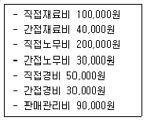

조리산업기사(공통) (2004-08-08 기출문제)
1과목: 식품위생 및 관련법규
1. 조리사를 두지 않은 식품접객영업자와 집단급식소 운영자가 받는 벌칙은?
- 1년이하의 징역 또는 5백만원 이하의 벌금
- 2년이하의 징역 또는 1천만원 이하의 벌금
- 3년이하의 징역 또는 3천만원 이하의 벌금
- 5년이하의 징역 또는 3천만원 이하의 벌금
(정답률: 80%)

2. 조리사의 법령 준수사항 이행여부를 확인하고 지도하는 직무를 담당하고 있는 자는?
- 식품위생감시원
- 위생사
- 식품위생심의위원
- 자율지도원
(정답률: 88%)
3. 장염비브리오에 의한 식중독의 특성으로 잘못된 것은?
- 원인 세균의 이름은 Vibrio parahaemolyticus 이며 그램음성의 통성혐기성 간균으로 호염성 세균이다.
- 독소형 식중독이므로 섭취전 재가열로 충분한 예방이 어렵기 때문에 균이 오염되지 않도록 하는 것이 중요하다.
- 생선을 날로 섭취하는 우리나라와 일본에서 많이 발생되는 식중독이다.
- 오염된 식품과 접촉된 행주, 도마 등으로부터 유래되는 2차오염도 중요한 오염경로이다.
(정답률: 81%)
4. 다음 중 사용할 수 있는 염소 소독제가 아닌 것은?
- 차아염소산나트륨
- 표백분
- 이산화염소
- 메틸염화수은
(정답률: 82%)
5. 어류의 비린내 원인물질은?
- 트립토판
- 트리메틸아민
- 요소
- 함황아미노산
(정답률: 100%)
6. 부패를 판정하는 시험 방법 중 단독으로 행할 수 없는 것은?
- 관능시험
- 생균수 측정
- 휘발성 염기질소 측정
- pH 측정
(정답률: 68%)
7. 유독성분을 함유하는 식물과 성분이 맞지 않는 것은?
- 감자의 발아부위 - 솔라닌(solanine)
- 청매 - 시안(cyan) 배당체
- 목화 - 고시폴(gossypol)
- 피마자 - 뉴로톡신(neurotoxin)
(정답률: 91%)
8. 식품의 부패 지표물질이 갖추어야 할 조건이 아닌 것은?
- 지표물질은 신선한 식품내에는 존재하지 않거나 매우 낮은 농도로 존재하여야 한다.
- 지표물질은 부패에 관여하는 주 미생물군에 의해 생성되는 것이어야 한다.
- 부패가 진행됨에 따라 지표물질의 양도 증가하여야 한다.
- 외견상의 변화를 동반하여야 한다.
(정답률: 77%)
9. 유상수거대상 식품에 대해 설명한 것은?
- 부정∙불량식품 등을 압류 또는 수거∙폐기하여야 할 때
- 수입식품 등을 검사할 목적으로 수거할 때
- 식품 등의 기준 및 규격의 제정∙개정을 위한 참고용으로 수거할 때
- 유통중인 부정∙불량식품 등을 수거할 때
(정답률: 95%)
10. 도자기를 용기로 사용할 때 문제가 될 수 있는 중금속은?
- 비소(As)
- 납 (Pb)
- 구리(Cu)
- 수은(Hg)
(정답률: 85%)
11. 우유검사법 중 원유의 신선도를 알아보는 시험법이 아닌 것은?
- 메틸렌블루 환원검사
- 산도측정
- 알콜테스트
- 비중측정
(정답률: 48%)
12. 일본에서 일어난 미나마타병의 예에서 알게 된 중요한 사실은?
- 유독성분의 생물농축
- 유기염소제 농약의 잔류성
- 부정식품 첨가물의 유해성
- 내분비장해물질의 유해성
(정답률: 58%)
13. 포도상구균 식중독을 예방하기 위한 대책으로 보기 어려운 것은?
- 조리된 식품은 빨리 먹는다.
- 식품취급자는 손을 깨끗이 씻는다.
- 조리된 식품을 보관하고자 할 때에는 상온(10℃ 이상)에서 보관한다.
- 식품취급자가 화농성 질환이 있으면 식품취급에 종사하지 않는다.
(정답률: 94%)
14. 조리사가 면허증을 잃어버렸거나 헐어 못쓰게 된 때에는 재교부에 필요한 서류를 누구에게 제출해야 하는가?
- 시∙도지사
- 보건복지부장관
- 시장∙군수∙구청장
- 식품의약품안전청장
(정답률: 85%)
15. 식품접객업의 모범업소 지정은 누가 하는가?
- 시∙도지사
- 보건복지부장관
- 시장∙군수∙구청장
- 식품의약품안전청장
(정답률: 69%)
16. 아플라톡신(aflatoxin)에 대한 설명 중 틀린 것은?
- 일반적인 가열, 조리온도로 파괴된다.
- 전통발효식품인 간장, 된장 등에서도 검출될 수 있다.
- 땅콩, 옥수수, 견과류 등에 잘 생성된다.
- Aspergillus flavus, Aspergillus parasiticus 등이 생성한다.
(정답률: 70%)
17. 소독제의 사용비율이 옳은 것은?
- 에틸알콜 - 100%
- 석탄산 - 3 ∼ 5%
- 과산화수소 - 35%
- 양성비누 - 원액(10%)을 10배 희석
(정답률: 84%)
18. 조리사의 면허취소 사유에 해당되지 않는 것은?
- 면허증을 타인에게 대여해 주었을 경우
- 정신질환이 있는 자가 면허를 받았을 경우
- 식중독 사고를 발생하였을 경우
- 조리한 식품이 변질되었을 경우
(정답률: 83%)
19. 세균의 아포까지 사멸시킬 수 있는 살균법은?
- 저온 살균법
- 고압증기 살균법
- 고온순간 살균법
- 열탕 살균법
(정답률: 77%)
20. 포도상구균과 보툴리누스균의 독소가 바르게 연결된 것은?
- saxitoxin, palytoxin
- cicutoxin, mytilotoxin
- tetrodotoxin, amanitatoxin
- enterotoxin, neurotoxin
(정답률: 83%)
2과목: 식품학
21. 다음 중 중성 아미노산은?
- Leucine
- Asparagine
- Arginine
- Lysine
(정답률: 33%)
22. 지방의 물리적 성질에 대한 성질 중 틀린 것은?
- 포화지방산의 탄소수가 8개 이하이면 상온에서 고체 상태이다.
- 유지의 비중은 고급지방산이 증가됨에 따라 커진다.
- 어유, 간유 등은 고도불포화지방산을 많이 함유하므로 상온에서 액체이다.
- 불포화지방산은 동일한 탄소수의 포화지방산의 융점에 비하여 현저히 낮다.
(정답률: 36%)
23. 무 모양의 둥근 형태를 지니고 붉은색, 진노란색, 흰색등이 있으며, 이 중 붉은색을 지닌 것이 주종을 이루고 있고 색이 아름답기 때문에 요리에 널리 이용되는 채소는?
- 오이(Cucumber)
- 휀넬(Fennel)
- 비트(Beet)
- 빈스(Beans)
(정답률: 92%)
24. 효소적 갈변방지법 중 부적당한 것은?
- 가열처리
- 알칼리 첨가
- 금속이온 제거
- 소금물에 담금
(정답률: 50%)
25. 비타민 K와 가장 관계가 있는 것은?
- 근육긴장
- 혈액응고
- 자극전달
- 노화방지
(정답률: 71%)
26. 메밀에 함유된 플라보노이드 색소이며 비타민 P로도 작용하는 것은?
- 헤스페리딘(hesperidine)
- 루틴(rutin)
- 나린진(naringin)
- 쿼세틴(quercetin)
(정답률: 72%)
27. 다음 효소와 식품의 용도가 잘못 짝지워진 것은?
- Glucoamylase - 포도당 제조
- Papain - 맥주의 혼탁 방지
- Naringinase - 귤의 쓴맛 제거
- Thioglucosidase - 겨자의 매운맛 분해
(정답률: 38%)
28. 당뇨병에 관한 설명 중 틀린 것은?
- 인슐린 비의존성 성인당뇨병 발생의 위험요인으로 과다체중을 들 수 있다.
- 인슐린 비의존성 성인당뇨병은 심하지 않으면 식이 요법으로 치료가 가능하다.
- 인슐린 의존성 유아당뇨병의 경우 식사를 많이 해도 체중이 감소한다.
- 인슐린 의존성 유아당뇨병은 식이요법만으로도 치료가 가능하다.
(정답률: 69%)
29. 트립토판의 부족으로 나이아신 결핍에 의해 나타나는 펠라그라의 구강 및 피부염의 원인이 되는 식품은?
- 조
- 귀리
- 기장
- 옥수수
(정답률: 89%)
30. 파스타 제품의 일반적인 명칭과 그 모양이 바르게 설명된 것은?
- 라비올리 : 일자형 국수 형태
- 라자냐 : 수제비 밀듯이 넓적하게 네모로 자른 형태
- 푸실리 : 튜브형의 속이 빈 형태
- 펜네 : 만두처럼 소를 넣어 빚은 형태
(정답률: 90%)
31. 샐러드 제조시 녹색 야채가 산에 의해 누렇게 변색되는 이유는?
- 안토시아닌의 산화
- 플라본색소의 개환(chalcone화)
- 클로로필의 페오피틴화(pheophytin화)
- 카로티노이드의 산화
(정답률: 85%)
32. 동유처리의 과정을 설명한 것으로 옳은 것은?
- 폐유의 순화 과정
- 튀김기름의 발연점을 높이는 처리과정
- 저온에 일정기간 저장하는 과정
- 항산화제를 첨가하는 과정
(정답률: 52%)
33. 양파를 썰 때 눈물이 나게 하는 성분은?
- 디알릴 디설파이드(diallyl disulfide)
- 알리신(allicin)
- 알릴이소티오시아네이트(allyl isothiocyanate)
- 티오프로파날옥시드(thiopropanal-S-oxide)
(정답률: 55%)
34. 마요네즈를 만들 때 난황의 유화성을 나타내는 대표적인 성분은?
- ovalbumin
- lipovitellin
- ovomucoid
- lecithin
(정답률: 82%)
35. 불포화지방산이 아닌 것은?
- 올레산
- 팔미트산
- 리놀레산
- 아라키돈산
(정답률: 47%)
36. 키틴질의 구성당은?
- 갈락토사민(galactosamine)
- 갈락투론산(galacturonic acid)
- 글루코사민(glucosamine)
- 카라기난(carrageenan)
(정답률: 63%)
37. 요오드와 반응하여 청색을 띄는 것은?
- 아밀로펙틴
- 아밀로오스
- 덱스트린
- 5당류
(정답률: 60%)
38. 단백질을 가열하였을 때 일어나는 단백질 변성의 특징으로 적당하지 않은 것은?
- 효소작용을 하는 단백질은 효소작용을 상실한다.
- 단백질의 용해도가 증가한다.
- 단백질의 구조에 변화가 생긴다.
- 효소작용에 대한 감수성이 증가하여 소화가 잘 된다.
(정답률: 67%)
39. 다음 중 전분 당화 식품은?
- 식혜
- 우유
- 요구르트
- 국수
(정답률: 94%)
40. 우유에 대한 설명으로 틀린 것은?
- 우유 단백질의 대부분은 카제인(casein)으로 콜로이드 입자이므로 냄새성분의 흡착제거에 유용하다.
- 우유지방은 다른 지방에 비하여 저급지방산이 많아서 특유의 풍미를 내며 소화흡수가 쉽다.
- 우유의 백색은 카제인과 지방구가 빛을 난반사하기 때문이다.
- 우유를 65℃에서 30분간 저온살균하면 영양소의 파괴를 최소화할 수 있으나 병원성균은 살균되지 않는다.
(정답률: 62%)
3과목: 조리이론 및 급식관리
41. 인건비에 의한 원가조절에 필요한 자료가 아닌 것은?
- 작업명세서
- 작업분석표
- 작업일정표
- 검식일지
(정답률: 83%)
42. 쇠고기 편육을 할 때 옳은 것은?
- 양지머리, 안심, 사태 등 결합조직이 적은 부위 일수록 좋다.
- 편육제조시 졸(sol)상태의 젤라틴이 젤(gel)상태가 된 후에 무거운 것으로 눌러 모양을 잡아준다.
- 편육을 썰 때는 결의 반대방향으로 써는 것이 좋다.
- 고기는 찬물에 넣어 센불에서 계속하여 끓여준다.
(정답률: 91%)
43. 단백질 분해효소인 프로테아제가 함유된 식품은?
- 파파야
- 파인애플
- 무화과
- 생강
(정답률: 61%)
44. 열전도율이 가장 큰 냄비는?
- 알루미늄 냄비
- 스텐 냄비
- 법랑 냄비
- 구리 냄비
(정답률: 81%)
45. 우리나라의 5첩반상에 포함되지 않는 것은?
- 생채
- 구이
- 조림
- 회
(정답률: 90%)
46. 원가계산의 시점과 방법의 차이에서 분류한 것이 아닌 것은?
- 실제원가
- 예정원가
- 판매원가
- 표준원가
(정답률: 31%)
47. 작업 표준시간의 측정 목적이 아닌 것은?
- 임금을 설정하기 위한 자료가 된다.
- 표준원가 및 예산 통제 등의 원가관리의 자료가 된다.
- 작업량 계획 및 진도관리 계획의 자료가 된다.
- 식자재 구매의 기초자료가 된다.
(정답률: 72%)
48. 다음 사항을 고려하여 제조원가를 계산하면 얼마인가?

- 440,000원
- 450,000원
- 460,000원
- 540,000원
(정답률: 57%)
49. 감자조림을 하려고 한다. 정미중량 70g을 조리하고자 할 때 5인분의 발주량은? (단, 감자의 폐기율은 6%)
- 약 620g
- 약 183g
- 약 250g
- 약 372g
(정답률: 72%)
50. 튀김에 대하여 바르게 설명한 것은?
- 표면만을 가열한 음식은 낮은 온도에서 장시간 가열해야 한다.
- 튀김옷을 얼음물로 반죽하면 점도가 높게 유지되어 바삭하게 된다.
- 튀김옷을 만들 때 약간의 달걀을 섞어주면 연해진다.
- 튀김시 물이 많이 들어간 반죽은 기름을 적게 흡수한다.
(정답률: 53%)
51. 물의 대류에 의해 열이 식품의 표면에서 내부로 이동되며 수용성 비타민의 손실이 큰 조리법은?
- 굽기
- 삶기
- 볶기
- 튀기기
(정답률: 87%)
52. 전분을 가지고 묵을 쑬 때의 기본조리조작에 포함되지 않는 것은?
- 교반
- 썰기
- 수침
- 계량
(정답률: 76%)
53. 고구마의 조리시간이 길어지면 색깔이 갈변되는 요인은?
- 캐러멜화
- 젤(gel)화
- 호화
- 덱스트린화
(정답률: 80%)
54. 살라만더의 사용법 설명으로 잘못된 것은?
- 불을 점화할 때 성냥을 켜고 나서 개스코크를 돌린다.
- 철판을 꺼낼 때 방온 장갑을 사용한다.
- 철판을 꺼낸 후 정해진 작업대에서 작업한다.
- 살라만더의 발열망은 수시로 약품처리하여 청소해 주어야 한다.
(정답률: 71%)
55. 재고관리 기법이 아닌 것은?
- ABC 관리방식
- EOQ 방식
- LIFO 방식
- Mini-max 방식
(정답률: 52%)
56. 주방바닥에 대한 설명으로 잘못된 것은?
- 작업도중 미끄러지지 않도록 한다.
- 항상 약간의 수분이 있는 상태로 유지한다.
- 바닥은 항상 청결해야 한다.
- 바닥은 건조한 상태로 유지한다.
(정답률: 96%)
57. 조리작업장 및 작업의 동선관리 중 동작시간연구(motionand time study) 방안을 옳게 설명한 것은?
- 작업자의 시간과 에너지를 절약할 수 있도록 작업 동작을 분석하여 생산성을 높이는 합리화 방안이다.
- 작업대, 용기, 기타 작업용기 등을 기능화하여 시간, 동선을 줄이는 방안이다.
- 계속적인 동작, 탄력성 이용, 리듬있는 동작으로 작업을 유연하게 하는 방안이다.
- 기능성 있는 설비를 설치하여 음식의 적정온도와 품질을 유지하는 방안이다.
(정답률: 70%)
58. 스프를 만들 때 미리 밀가루를 우유에 잘 섞어 익힌 다음 채소즙을 섞어 익히는 이유는?
- 카제인 입자의 응고를 방지하기 위해
- 전해질 물질의 흡착을 형성시키기 위해
- 산소이온이 들어있기 때문
- 카제인 입자의 응고를 위해
(정답률: 74%)
59. 재료를 구입하는 절차 방법을 옳게 설명한 것은?
- 구입청구 → 주문 → 인수 → 회계 → 검수 → 기장
- 구입청구 → 주문 → 검수 → 인수 → 회계 → 기장
- 주문 → 구입청구 → 인수 → 검수 → 회계 → 기장
- 구입청구 → 주문 → 검수 → 회계 → 기장 → 인수
(정답률: 66%)
60. 식품구입시 감별법으로 옳은 것은?
- 두릅은 두릅순이 연하고 가는 것이 좋다.
- 다시마는 잔주름이 없고 검은색에 녹갈색을 띠어야 한다.
- 양송이는 줄기가 단단하고 긴 것이 좋다.
- 쇠고기는 썰었을 때 육면에서 수분이 많이 나올수록 맛이 있다.
(정답률: 82%)
4과목: 공중보건학
61. 일본뇌염의 설명 중 옳은 것은?
- 우리나라에서 봄에 많이 발생된다.
- 중국얼룩날개모기에 의해서 전파된다.
- 병원소는 돼지이고, 잠복기는 5∼14일이다.
- 예방관리는 환자격리가 가장 중요하다.
(정답률: 49%)
62. 4대 온열요소가 아닌 것은?
- 기온
- 기습
- 기류
- 기압
(정답률: 84%)
63. 대기오염으로 인하여 가장 많은 문제를 일으키는 질환은?
- 소화기계질환
- 호흡기계질환
- 순환기계질환
- 비뇨기계질환
(정답률: 98%)
64. 시력의 보호를 위하여 좋은 조명 방법은?
- 직간접조명
- 직접조명
- 간접조명
- 반간접조명
(정답률: 84%)
65. 건조상태에서 정상공기의 화학적 조성이 틀린 것은?
- O2 - 21%
- CO2 - 0.3%
- Ar - 0.93%
- N2 - 78%
(정답률: 77%)
66. 직업병과 관련있는 근로자와의 연결이 틀린 것은?
- 전신진동장애 - 발전기취급자
- 소음성난청 - 발파작업자
- 백혈병 - 방사선취급자
- 저압장애 - 잠수부
(정답률: 79%)
67. 기온역전현상과 관련된 것은?
- 상층의 기온이 하층보다 낮을 때
- 상층의 기온이 하층보다 높을 때
- 상층과 하층부의 공기가 뒤바뀔 때
- 상층의 기온과 하층의 기온이 같을 때
(정답률: 72%)
68. 모기가 매개하는 질병이 아닌 것은?
- 말라리아
- 사상충증
- 황열
- 수면병
(정답률: 84%)
69. 기생충의 형태별 분류상 원충류에 해당되는 것은?
- 회충
- 폐흡충
- 무구조충
- 이질아메바
(정답률: 79%)
70. 폴리오(polio)에 관한 설명 중 옳은 것은?
- 말초신경계에 손상을 일으킨다.
- 일시 마비를 일으키는 급성 전염병이다.
- 예방접종은 약독화 백신으로 실시한다.
- 병원소는 환자 및 불현성 감염자이다.
(정답률: 57%)
71. 해충의 구제방법 중 천적을 이용하는 것은?
- 환경적 방법
- 물리적 방법
- 화학적 방법
- 생물학적 방법
(정답률: 80%)
72. 쓰레기를 소각처리할 때 가장 문제가 되는 발암성 화학 물질은?
- 디디티(DDT)
- 피씨비(PCB)
- 다이옥신(dioxin)
- 솔라닌(solanine)
(정답률: 86%)
73. 바다 생선회로 감염 받기 쉬운 기생충 질환은?
- 간흡충증
- 아니사키스증
- 구충증
- 요충증
(정답률: 79%)
74. 만성전염병의 특성에 대한 설명으로 옳은 것은?
- 발생률이 낮고 유병률은 높다.
- 발생률이 높고 유병률은 낮다.
- 발생률 및 유병률 모두 높다.
- 발생률 및 유병률 모두 낮다.
(정답률: 72%)
75. 일반폐기물의 처리방법 중 지하수 오염의 가능성이 있는 것은?
- 소각처리
- 매립처리
- 마쇄법
- 재활용법
(정답률: 91%)
76. 정기예방접종 대상 질환에 속하지 않는 것은?
- 유행성이하선염
- 페스트
- 풍진
- 폴리오
(정답률: 57%)
77. 기생충의 생활사 중 유성번식세대와 무성번식세대가 교대로 나타나 세대교번을 하는 기생충은?
- 유구조충
- 회충
- 간흡충
- 삼일열원충
(정답률: 68%)
78. 파리가 장티푸스를 전파하는 방식은?
- 화학적 전파
- 기계적 전파
- 경란형 전파
- 배설형 전파
(정답률: 58%)
79. 성층권의 오존층 파괴와 관계가 큰 냉매 물질에 속하는 것은?
- SO2
- NO2
- CFC
- CO
(정답률: 52%)
80. 제 1, 2, 3군 전염병의 순서로 바르게 연결된 것은?
- 장티푸스 - 폴리오 - 일본뇌염
- 세균성이질 - B형간염 - 성홍열
- 디프테리아 - 풍진 - 탄저
- 파라티푸스 - 백일해 - 홍역
(정답률: 35%)